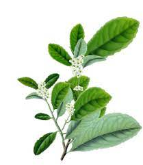

Enviamos comentarios y sugerencias

Nombre:
Apellido:
Mail:
Que tipo de yerba prefiere?
Yerba con palo
Yerba sin palo
Yerba saborizada
Yerba con compuesta con hierbas aromaticas
Elige una opcion
Consulta
Sugerencia
Reclamo
Puede escribir
Enviar
Reset